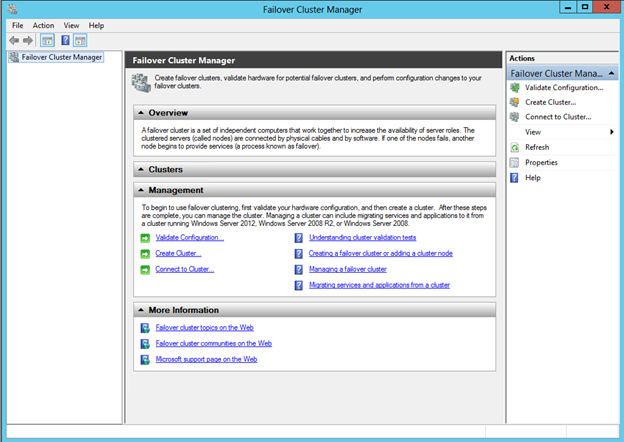
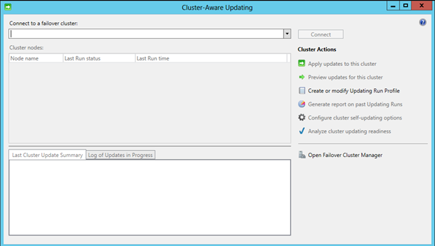

What’s new in Windows Server 2012 Failover Clustering–Part 1
In this blog post we will have a look at new capabilities & features introduced in Failover Clustering with Windows Server 2012. We will also discuss on features which were improved from Windows Server 2008 R2 Failover Clustering.

Lets first look at scalability improvements in Failover Clustering.
With Windows Server 2012 Failover Clustering, we can now scale up to 64 Nodes compared to 16 nodes which was possible on Windows Server 2008 R2. We have almost 4 times of the scale from the previous edition and also twice scalable as Vmware ESX 5.1 which can only move up to 32 Nodes per cluster.
Windows Server 2012 also supports up to 8000 VMs per Cluster and also 1024 VMs per Node where as previously on Windows Server 2008 R2, we could only scale up to 1000 VM Per cluster.
Failover Clustering is now available as a feature with both Standard Edition & Datacenter Editions of Windows Server 2012. Its not required anymore for you to purchase Enterprise/Datacenter Editions, like in Server 2008 R2, to take advantage of failover clustering, its available with both editions of Windows Server Standard and Datacenter. (There’s no Enterprise edition for Windows Server 2012 only Standard & Datacenter)
Looking at Large scale cluster management capabilities introduced with Server 2012, I would like to highlight following key features which makes it simple & efficient to manage clusters across the datacenter.
– Search filtering and creation of custom views
– Multiselect
– Live migration & Quick migration
– CSV Configuration
– Hyper-V Replication
Management and Mobility capabilities of Failover Clustering
In this section we will discuss regarding improvements for Mobility & Management of Failover Clusters
– Virtual Machine failover Prioritization
VM Prioritization can be configured to change the behavior of Virtual Machines when they failover and also when they are starting up. We can specify High, Medium, Low or No Auto Start sessions which will determine the behavior of a Virtual Machine when they are starting up after a failure. High Priority Virtual Machines will get started first and if there are no resources low priority VMs will go to a saved state providing sufficient capability for High Priority Virtual machines to start.
– Enhanced Failover placement
Failover placement becomes critical whether you are intentionally moving Virtual Machine or due to a failure of a node, virtual machines needs to be placed distributed across available node optimizing available resources. Server 2012 has intelligence built-in with Cluster services which can determine candidate node by looking at physical memory resources and also existing workloads for a rapid failover.
– Virtual Machine Mobility
Failover clustering provides mobility capabilities for Live migration, Quick migration, storage migration and also Hyper-V Replica. Live migration was first introduced in Windows server 2008 R2 and it has been improved to provide multiple simultaneous live migrations to be proceed between same nodes of the cluster. Windows Server 2012 also provides
-Storage Migration
Storage migrations provides capabilities for moving a virtual machine to a different location including its data store & configuration. It is possible for us to execute a live storage migration while the virtual machine is running and without having to have a downtime.
-Hyper-V Replica
Hyper-V replica is a disaster recovery capability which is built in to the box. Hyper-V replica doesn’t require any storage replication solution, only with the use of another hyper-V target it is possible for us to replicate VMs with 5 minute intervals.
– Application Monitoring
With Failover clustering and hyper-v integration, we can monitor applications running in a virtual machine. Using this capability we can detect whether a key service of a virtual machine has a failure and If it does automatically provide corrective actions such as restarting a service, restarting the virtual machine or moving the virtual machine to another node in the cluster.
– Guest Clustering Improvement
o Guest clustering can provide required high availability for applications running on Virtual Machines using Failover clustering capabilities available on Windows Server 2012. With previous release of Windows Server, we could only provide iSCSI-shared storage for Guest clustering, but now with Server 2012 we can also provide Fiber Channel support by using a Virtual Fiber Channel Adapters to Virtual machines.
Cluster-Aware Updating
This is one of the most asked features by customers for Clustering. Cluster-aware updating provides capabilities for automated patching for Windows Failover Clusters. Cluster-Aware updating feature will take advantage of node draining and failback availabilities during update process. Cluster-Aware updating works with either Windows Update or Windows Server Update Services which determines which updates that needs to be installed on cluster nodes. Cluster-Aware updating will drain all workloads from a cluster node and it will place the node on maintenance mode. Once the node gets placed on maintenance mode Cluster-Aware Updating will then download and install required updates. If required, Cluster-Aware updating will reboot the machine and complete the patching process which will take the node out of maintenance and migrate workloads back to the node before progressing towards the next node in the cluster.

We will look at more features such as Cluster Storage, Active Directory Interoperability, Cluster Validation Process, Cluster Quorum Improvements, and Supported Roles for Clustering in my next blog post.